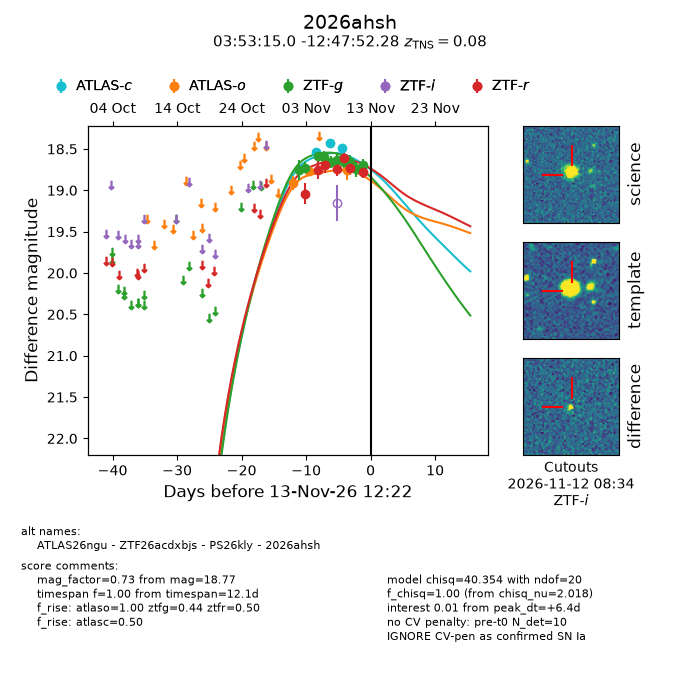
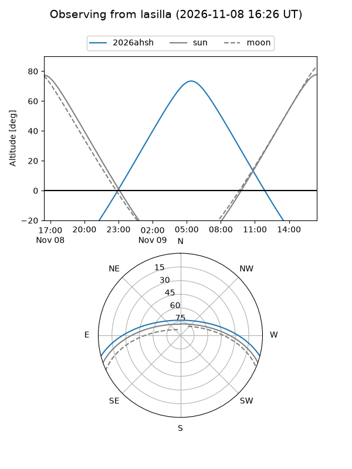
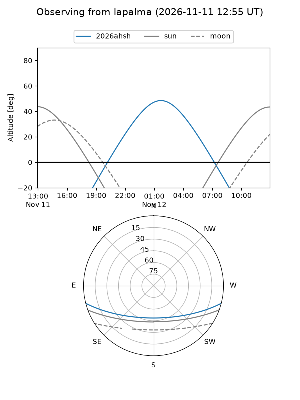
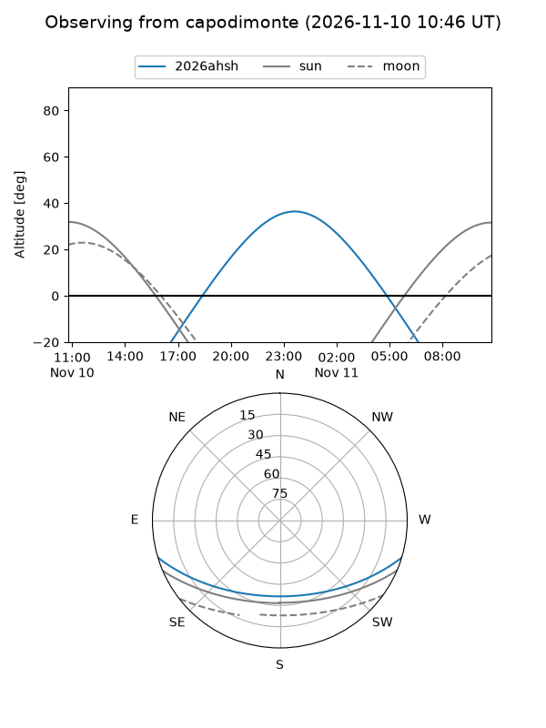
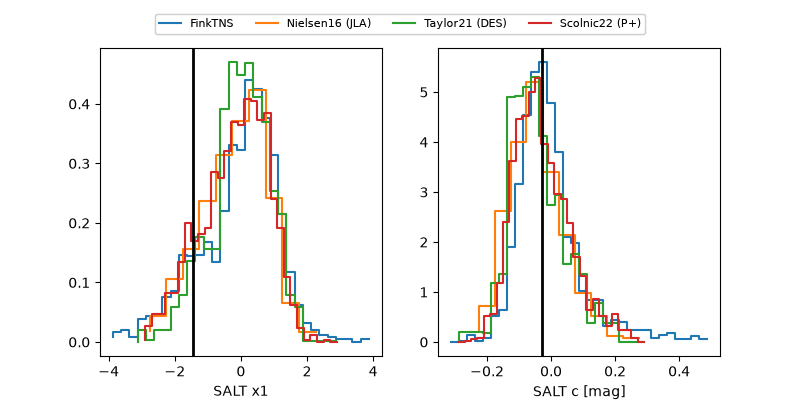

2026ahsh
Target 2026ahsh at 2026-11-13 12:23
Aliases and brokers:
FINK-ZTF: ztf.fink-portal.org/ZTF26acdxbjs
Lasair-ZTF: lasair-ztf.lsst.ac.uk/objects/ZTF26acdxbjs
ALeRCE-ZTF: alerce.online/object/ZTF26acdxbjs
YSE-PZ: ziggy.ucolick.org/yse/transient_detail/2026ahsh
TNS name: wis-tns.org/object/2026ahsh
Direct TNS query: direct search
alt names
ZTF26acdxbjs (ztf,fink_ztf)
2026ahsh (tns,yse)
PS26kly (panstarrs)
ATLAS26ngu (atlas)
Coordinates:
equatorial (ra, dec) = 58.3124,-12.79786
equatorial (HMS+DMS) = 03:53:14.98,-12:47:52.28
galactic (l, b) = (203.5536,-45.22014)
Flags:
TNS type: SN Ia
TNS redshift: 0.0800
peak dt: +6.4
Photometry:
last atlasc=18.49, atlaso=18.75, ztfg=18.70, ztfr=18.77
3 atlasc, 3 atlaso, 10 ztfg, 7 ztfr detections
Lightcurve

Visibility



Additional plots
